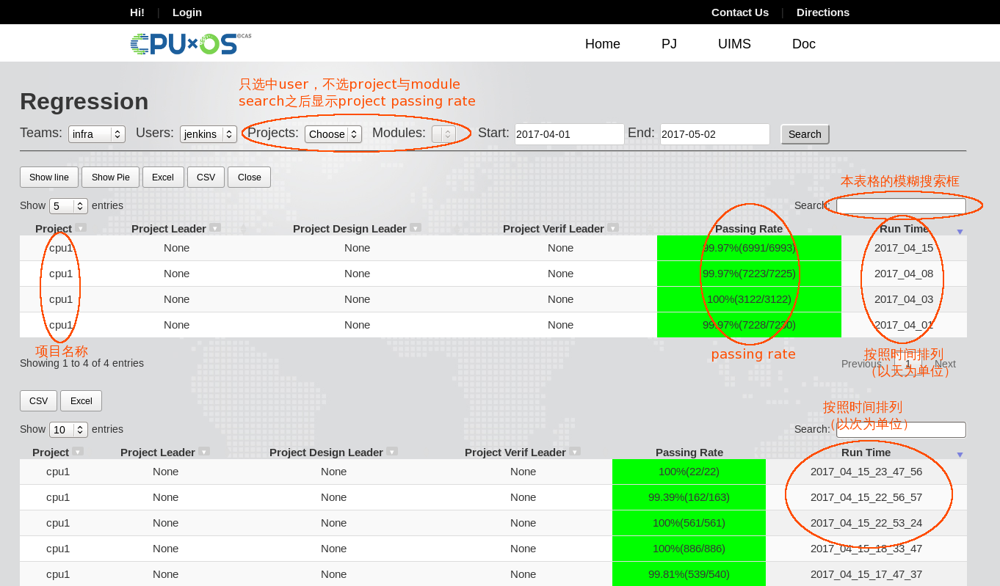
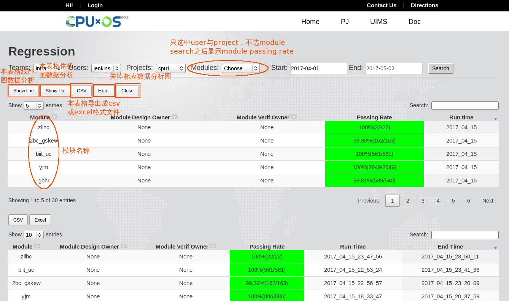

backend构架介绍¶
平台的backend框架主要是给runner提供一些辅助功能来实现更好的用户体验，同时它还是数据中心，所有simulation、regression的数据通过一个web前端向外展示
Database¶
使用PostgreSQL9.5搭建的SQL Server，目前只有记录regression信息的一个database，所有regression的信息会汇总到这里
Web Framework¶
利用Django1.10, bootstrap3搭建的web框架，详细的regression report以及平台文档都是通过这个web框架对外展示
如何访问平台¶
在linux eda和windows虚拟机通过访问 http://172.51.13.205:8000 打开平台的index
index页面

进入regression report web app，会显示一个索引控件与一个所有kick off过pj的用户列表，利用索引控件可以自动选择与过滤想要查询的信息，日期范围默认查询从今天开始向前一天的信息，用户默认选择jenkins，因为jenkins kick off的regression算是sign off的标准
只选中user之后查询会显示projects passing rate信息，列出这个用户所有的projects以及相应的passing rate，上下两栏分别显示以天为单位和以次为单位的projects的passing rate
只选中user与project之后查询会显示modules passing rate信息，列出这个用户该project所有的modules以及相应的passing rate

user、project与module都选中之后查询会显示case详细信息列表，列出该module已经被kick off的case以及case的status
利用这些组合以及日期选择可以灵活的查看想要的passing rate与case状态信息，方便所有人的统计与查看。
开发阶段说明¶
该web app目前发布的v3.0版是一个稳定的版本，日后不会有太大的功能改动，欢迎大家试用，如有任何问题及建议，请联系平台组 yigy@cpu.com.cn